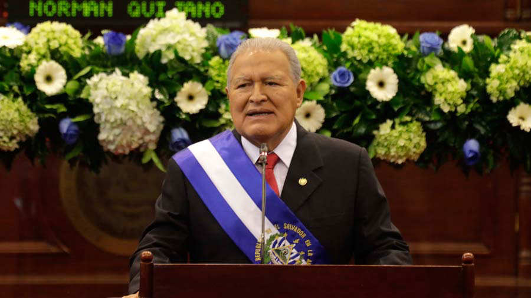

El Salvador, 20 Agosto 2018
Gobierno de El Salvador rompe con Taiwán y abre relaciones con China
Las reacciones sobre el anuncio del presidente no se hicieron esperar. Mientras el FMLN felicitó la decisión; el presidente de la Asamblea Legislativa, Norman Quijano y otros funcionarios la rechazaron.
En cadena nacional, la noche de este lunes, el presidente de la República, Salvador Sánchez Cerén anunció que El Salvador rompe relaciones diplomáticas con Taiwán y las abre con China.
“Este es un paso en la dirección correcta, que corresponde a los principios del derecho internacional, de las relaciones internacionales y a las tendencias ineludibles de nuestra época. Permitirá además grandes beneficios para el país”, dijo en su discurso el presidente.
“La República Popular China es la segunda economía del mundo, en permanente crecimiento, y los desarrollos logrados en diversos campos le permiten posicionarse entre los países más exitosos” aseguró Sánchez Cerén.
El presidente también dijo que los salvadoreños becados en Taiwán serán trasladados en los próximos días a China, “asegurando sus oportunidades de estudio”.
La decisión de cerrar vínculos entre ambos países le fue notificada, ayer por la tarde, a la República de Taiwán, según el Presidente.
El Savador abre relaciones con la Republica Popular China
La razón por la que el gobierno abrirá relaciones con China, a decir de Sánchez Cerén, es porque “es el único legítimo en representación de toda China, y Taiwán forma parte inalienable del territorio chino”.
Agregó que con ello El Salvador se suma a otras 177 naciones que han aprobado la resolución 2,758 de la Asamblea de la Organización de las Naciones Unidas que reconoce la existencia de una sola China.
El gobernante destacó que entablar relaciones con China impulsará el diálogo político y la coordinación en asuntos internacionales y cooperación en áreas de comercio, inversión, desarrollo de infraestructura, salud, educación y turismo.
La Presidencia informó que el canciller salvadoreño, Carlos Castaneda; el primer designado a la Presidencia, Medardo González, y el secretario para Asuntos Legislativos y Jurídicos, Francisco Alvarado, estaban en Beijing para la firma de un comunicado conjunto con delegados chinos sobre el establecimiento de las relaciones diplomáticas.
Las reacciones sobre el anuncio del presidente no se hicieron esperar. Mientras el FMLN felicitó la decisión; el presidente de la Asamblea Legislativa, Norman Quijano y otros funcionarios la rechazaron.
La embajadora Jane Manes de la USA ya había señalado el interés de China en la región. Recientemente, la funcionaria aseguró que China Continental pretende incursionar en Centroamérica y El Caribe, usando los flancos más débiles de estos países con el interés de “militarizar la región”.
Para el caso de El Salvador, el canal de entrada sería la inversión de China en el Puerto de La Unión, afirmó Manes.
“Están tratando de encontrar puntos débiles en la región, donde pueden hacer este tipo de arreglo en la región, estamos preocupados que no sólo es inversión en un puerto, pero después quieren hacer algo con los militares y quieren crecer la influencia china en la región, es un asunto estratégico y necesitamos todos tener nuestros ojos abiertos a lo que está pasando”, dijo.